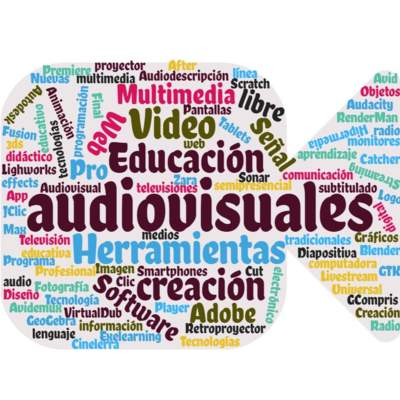
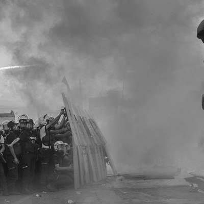
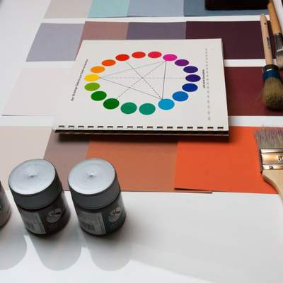

Unidad 1: Problemáticas juveniles y medios contemporáneos
Desarrollar proyectos basándose en problemáticas juveniles y reflexionar frente a diferentes manifestaciones visuales y audiovisuales.

Unidad 2: Problemáticas sociales y escultura
Utilizar la escultura para desarrollar proyectos que se relacionen con diferentes problemáticas sociales y reflexionar de manera crítica ante diversas manifestaciones visuales.

Unidad 3: Instalación multimedial
Crear proyectos multimediales combinando medios de expresión visuales, audiovisuales y sonoros, entre otros.

Unidad 4: Diseño y difusión
Crear piezas de diseño usando diferentes medios y materialidades y difundir manifestaciones visuales en la comunidad.